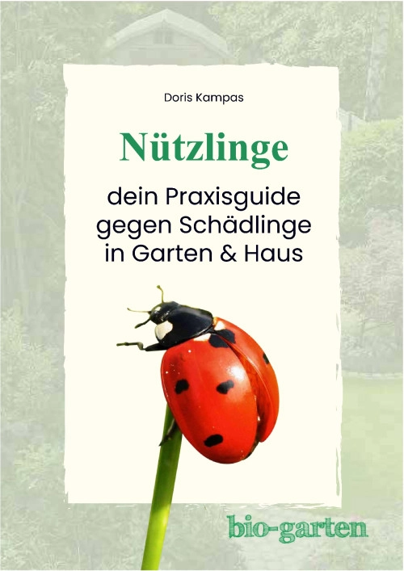

Balkon & Garten
Praxisguide Nützlinge – chemiefrei in Garten und Haus
Digitaler Ratgeber zu einem naturbewussten Umgang mit Schädlingen an Garten-, Zimmer- und Haushaltspflanzen.
Preis: 18,60 €Geprüfter Produktlink
Anzeige · Affiliate-Link: Wenn du über einen Link kaufst, erhalten wir möglicherweise eine Provision. Der Preis bleibt unverändert.